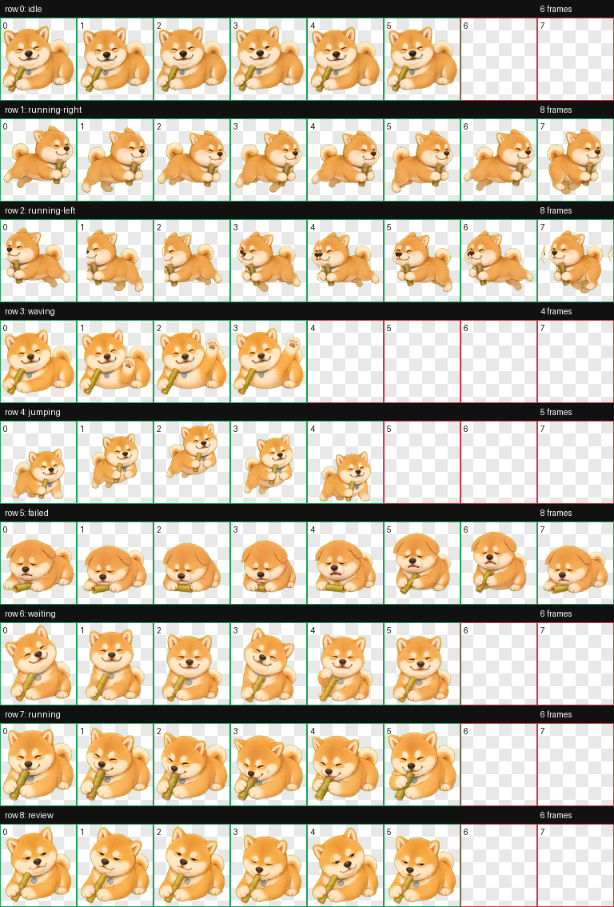

Open pet packs for desktop agents
Pets that know when your coding session has gone too long.
PetHatch ships animated pet packs with runtime configs: focus nodes, rest reminders, and activity sources that compatible runtimes can use.
./bin/pethatch install xiaochai --force
Pack registry
Current pets
Why PetHatch is different
Behavior is part of the pack.
A pet pack should not only say what the pet looks like. It should say how the pet reacts when the runtime sees focus time, input idle, or a session that needs a break.
Event map
Runtimes send events. Pets choose reactions.
PetHatch packs keep animation rows stable, then layer semantic events on top. This is the part a normal asset gallery does not show.
Nine-state atlas
Compatible with Codex Pets and OpenPets-style runtimes.
The atlas keeps the stable 8 x 9 grid. Behavior rules map richer runtime events onto the existing rows instead of inventing endless new sprite states.
